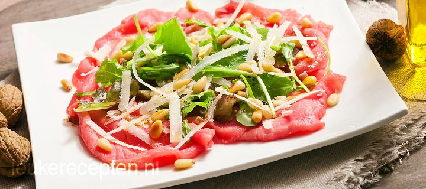

Carpaccio
Ingrediënten
- 250 gr dun gesneden ossenhaas (carpaccio)
- eelt grof geraspte parmezaanse kaas
- 4 eelt geroosterde pijnboompitten
- Handje rucola
- Peper en zout
- 2 eelt olijfolie
- 1eelt balsamicoazijn
Bereiding
Verdeel de carpaccio over 4 borden en garneer met de rucola, parmezaanse kaas en pijnboompitten. Bestrooi met een beetje peper en zout. Roer de olijfolie met de balsamicoazijn los en besprenkel de carpaccio hiermee
